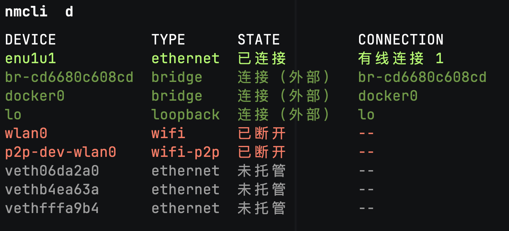

前言
上一篇文章讲了在树莓派上安装 Manjaro 系统，用的是有线的方式，树莓派是支持 Wi-Fi 的，所以今天来讲一下连接 Wi-Fi。
NetworkManager 与 nmcli
配置 Wi-Fi 需要用到 NetworkManager 和 nmcli ，所以要先安装一下
1
|
sudo pacman -S networkmanager nmcli
|
安装好之后需要启动这个服务
1
2
3
|
sudo systemctl start NetworkManager.service
# 设置开机自启动
sudo systemctl enable NetworkManager.service
|
查看网络连接状态

可以看到 Wi-Fi 是没有连接的
查看 Wi-Fi 是否打开
1
2
3
4
|
nmcli r
WIFI-HW WIFI WWAN-HW WWAN
已启用 已启用 missing 已启用
|
默认是打开的，如果没有打开可以使用如下命令
扫描网络中的 Wi-Fi
结果如下所示
1
2
3
4
5
|
nmcli d wifi list
IN-USE BSSID SSID MODE CHAN RATE >
B1:A0:2B:E6:B2:K9 SSID-1 Infra 9 130 M>
C0:A0:3B:E6:A3:01 SSID-2 Infra 9 130 M>
14:A4:60:82:B9:F4 SSID-3 Infra 1 270 M>
|
连接
假如我们连接 SSID-1 这个 Wi-Fi，可以通过下面这条指令，密码换成对应的密码
1
|
nmcli d wifi connect SSID-1 password <密码>
|
总结
在树莓派上连接 Wi-Fi 还是比较简单的，通过几个命令就行了。
完整代码
1
2
3
4
5
|
sudo pacman -S networkmanager nmcli
sudo systemctl start NetworkManager.service
sudo systemctl enable NetworkManager.service
nmcli r wifi on
nmcli d wifi connect SSID-1 password <密码>
|
参考
网络管理之命令行工具nmcli - hokori - 博客园